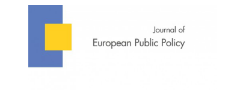

收录于合集

简 介
【作者介绍 】Katharina Luise Meissner，奥地利维也纳大学欧洲一体化研究生博士；Lachlan McKenzie，澳大利亚墨尔本大学社会与政治科学学院高级项目官员。
【文章来源】
JOURNAL OF EUROPEAN PUBLIC POLICY，published online: 21 Sep 2018.

【期刊介绍】
JOURNAL OF EUROPEAN PUBLIC POLICY，创刊于1994年，着眼于欧洲公共政策的动态，鼓励广泛的社会科学方法，包括定性和定量。2017年影响因子为2.994。
【期刊网址】
https://www.tandfonline.com/toc/rjpp20/current
【编辑 】胡频
【 审核 】李逸成 庞林立
【 提纲 】
-
欧盟贸易协定中的人权条件
-
理论：战略议题与组织行动
-
研究策略
-
人权条件与欧盟—加拿大贸易协定
-
欧洲议会在人权问题上的立场
核心观点
随着贸易议程扩大，欧盟的目标日益包括促进根本政治和人权等非商业内容，并处在使用条件性条款将商业目标与政治利益联系起来此类做法的最前沿。虽然欧洲议会在欧盟结束贸易协定时将自己定位为此类目标的倡导者，然而，它却很少在谈判中坚持这些目标。但在与加拿大的谈判中，欧洲议会成功地在人权条款上采取强硬立场。加拿大作为一个在基本权利方面名列前五的国家，为什么欧盟在与其达成的协议中投入政治资源以坚持人权条款？作者将以欧盟贸易谈判中的人权条款为背景，将欧洲议会理解为一个复合行动者，它能够对各成员国采取刻意、协调的行为，利用整合组织行为理论来填补关于条件性条款决策的空白，并对欧盟与贸易谈判协定进行实证分析。 本文认为，由于组织能力有限，在这种情况下，复合行动者（如欧洲议会）必须在政治事件中选择 “战略议题”，从而成为公共利益的独特支持者。
欧盟贸易协定中的人权条件
自1995年始，欧盟已经在贸易协定中系统地纳入人权条件性条款，但在不同的谈判伙伴间，欧盟对人权条款的坚持却表现迥异。虽然欧盟的大部分贸易协议都包含条件性条款，但是仍旧存在欧盟破坏人权条件性条款的法律责任的案例。在欧盟与新加坡的贸易协定中，协定中的条款附带了一封承认新加坡人权实践的函件；而在与越南的贸易协定中，达成的协议没有明确规定在违反人权的情况下暂停贸易，这也破坏了条件性条款的法律责任。相较之下，欧洲议会在与加拿大贸易谈判过程中，为何对人权条款如此坚持？
理论：战略议题与组织行动
为了弄清楚欧洲议会缘何对加拿大坚持强有力的人权条款， 作者在文中首先阐述了他们对欧洲议会有限组织能力的假设。其次，解释类似于欧洲议会等复合行动者确定战略议题并投入政治资源的原因与过程。最后，建立了一个战略问题如何转化为组织行动的机制。
第一， 复合行动者意为能够采取有意识的行动，旨在取得达到高于成员单独行动的协调组织的效果。 因此，本文将欧洲议会称为复合行动者，能够在其成员国级别以上的活动中采取有意的行为。 作者进一步假设复合行动者受到有限组织能力的作用，其处理信息的能力受到限制。
第二，由于 **组织能力有限，在众多 “战略问题”中，复合行动者选择投入政治资源，而在一系列政治事件中，复合行动者需要进行效用计算以选择能够满足其目标的事件或行为。**政治问题本身并不具有战略意义，相反，复合行动者将“战略意义”归咎于问题或事件，从而识别那些会为目标实现提供最大杠杆的问题或事件。 通常情况下，复合行动者一方面强调特定性 ，为自己塑造一个特定的身份，将自己与其他行为者区分开来； 另一方面，显著性也是复合行动者所需关注的 ，一个具有显著性的政治事件，为复合行动者将政治资源投入战略问题以塑造最终结果提供机会。
作者认为特定性和显著性的结合决定了战略议题的选择 。只有在像欧洲议会这样的复合行为体声称能够引起与公众舆论产生共鸣的独特问题以及这个问题可能会吸引注意力或影响力的情况下，才会投入资源以组织行动。
**第三，组织行动的类型，例如投资的政治资源，是由复合行动者将战略问题归类为 “威胁”还是“机会”来调解的，这种分类将影响复合行动者组织行动时所采取的方式。**在将战略问题归类为“威胁”情况下，欧洲议会才会采取风险较大的行动，因为他们害怕蒙受更大的损失。相比之下，当欧洲议会将战略问题确定为“机遇”时，可能会采取“小规模”的行动。作者预计，在与加拿大的贸易谈判过程中，欧盟将其确定为战略议题，并将其归类为“风险不利行动”，而非“风险密集行动”。
研究策略
在研究过程中，本文将重点放在决策过程，并研究复合行动者的偏好形成。 作者依赖于2013年、2014年和2018年参与双方谈判的官员的半结构化访谈记录。选择访谈的时长为30-45分钟，其中有8位直接参与欧盟- 加拿大谈判的官员，这些受访者被问到一系列半结构化问题，旨在确定整个谈判过程中，他们如何看待条件性和促进人权及其原因。加拿大谈判代表，欧洲对外行动署等官员也接受了采访，目的是确定他们对条件性和人权的立场，重点关注欧洲议会的争议领域，用于衡量决策过程中公众形象与条件性的显著性。
人权条件与欧盟-加拿大贸易协定
《全面经济与贸易协定》是一项极具争议性与显著性的协定，并且有着相当高的商业价值与知名度。此份协定对欧洲议会将人权与贸易相联系的方法具有战略意义，主要是出于两方面的原因：首先，加拿大反对将条件性条款和《全面经济与贸易协定》谈判与《战略合作协议》谈判联系起来，认为这种做法是不必要的；其次，欧洲议会决策过程的参与者表明他们愿在人权方面做出让步。
除了战略意义之外，《全面经济与贸易协定》包含的广泛内容引发了公众争论，特别是在诸如投资者-国家- 争端解决机制等非商业问题上。此外，《战略合作协议》的条件性和并行谈判都是突出的问题。欧洲议会将以巩固“共同方式”为基础的政策标准进行谈判。因此，条件性和《战略合作协议》由欧洲委员会构成，这对维持共同方式很重要。欧盟委员会认为，对共同方式的让步将破坏决策机制，而这种机制恰恰是将人权与贸易联系的主要支持者。 因此，对《全面经济与贸易协定》中 “共同方式”的妥协意味着欧洲议会政策的削弱，而坚持条件性以及面对加拿大反对的《全面经济与贸易协定》和《战略合作协议》的平行谈判将意味着欧洲议会决策领域的巩固甚至扩大。
**
**
欧洲议会在人权问题上的立场
**
**
与欧盟委员会和成员国相比，欧洲议会强烈要求通过《战略合作协议》将条件性与《全面经济与贸易协定》联系起来。它曾意识到对加拿大的人权条款存在问题，有可能导致《全面经济与贸易协定》谈判的结束。如果不是出于必要性或理想主义，为什么欧洲议会会在《全面经济与贸易协定》中坚持人权？
**欧洲议会将人权确定为 “战略议题”。**贸易和政治条款之间的联系是一种独特的议会利益，尤其是对于加拿大而言。欧洲议会知道它是欧盟内部唯一一个坚持“横向维度”的行为者，因而成为人权的独特支持者，并利用机会通过积极实施协议的横向维度来扩大政策标准。因此，欧洲议会选择将人权条件作为欧盟—加拿大谈判中的“战略问题”。
**欧盟议会内部处理人权作为 “战略议题”的方式。**在与加拿大谈判的情况下，欧盟议会内部处理人权问题是通过两个不同的会委员会进行的。首先，国际贸易委员会负责审查贸易谈判（《全面经济与贸易协定》），其次，欧洲议会外交事务委员会负责《战略合作协议》的并行谈判，包括人权。由于这种分工，《全面经济与贸易协定》和《战略合作协议》也会在欧洲议会内进行单独的全体辩论。尽管欧盟成员国对于欧洲议会在欧盟—加拿大谈判中坚持人权条件的行为，并未完全无异议，但欧洲议会作为单一行为者，始终是《战略合作协议》中政治条款的最强支持者。此外，在《全面经济与贸易协定》谈判期间，欧洲议会全力参与其中，认为其对人权的要求是可行的，从而将该问题划分在扩大决策影响力的一栏中。
转向组织行动。 在将人权确定为战略议题并将其归类的基础上，欧洲议会着手转向关于条件性条款的组织行动。在此过程中，外交事务委员会提交草案要求在人权条件方面对加采取强硬立场，此举得到议会的批准。此外，欧洲议会的活动还包括在关于就人权条款举行辩论，并出具草案。
结论
在欧盟- 加拿大谈判过程中，欧洲议会将人权条件确定为“战略议题”，因为人权将令其成为合法的和公共利益的独特支持者。在动员其政治资源支持人权条件时，欧洲议会考虑了《全面经济与贸易协定》谈判的重要性。欧盟—加拿大贸易协议的显著性为欧洲议会提供了投资政治资源的机会，以便最终达成有利于非商业目标的协议。 在本文中，作者述了欧洲议会作为一个负责任的行为者面临的两难困境，一方面是建设性地为贸易协定做出贡献，另一方面是坚持战略议题或原则。 尽管欧洲议会在特定情况下坚定立场，但只有在这有助于实现其组织目的并且在公众可见时才会这样做。文中提出的论点有助于了解欧洲议会何时以及为何将坚持战略问题并转向组织行动。
更多阅读
- SSCI编译
【FA重磅】罗伯特·杰维斯：朝鲜半岛中的知觉与错误知觉：不必要的战争如何开始 ****
【IR杂志】人权悲剧：美国对外政策在哥伦比亚的战略本土化 ****
【IS杂志·重磅】安全曲线和国际政治结构——一种复合新现实主义理论
- 中文转载
【当代亚太·孙西辉】大国脆弱性与风险平衡：印度军事干涉的逻辑
- 资源更新
- 更多阅读

国政学人 （ID：guozhengxueren)
为方便学人及时阅读高质量文章
别忘把国政学人设置 星标 哦~